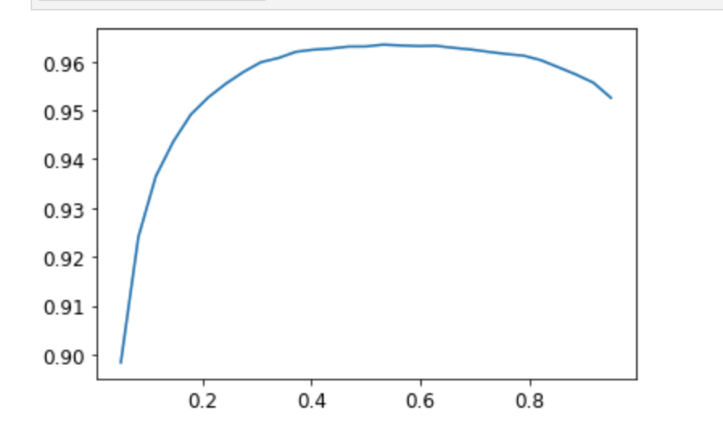

Image Classification
Data Prep
Remember, Datablock helps create DataLoaders.
from fastai.vision.all import *
path = untar_data(URLs.PETS)
pets = DataBlock(blocks = (ImageBlock, CategoryBlock),
get_items=get_image_files,
splitter=RandomSplitter(seed=42),
get_y=using_attr(RegexLabeller(r'(.+)_\d+.jpg$'), 'name'),
item_tfms=Resize(460),
batch_tfms=aug_transforms(size=224, min_scale=0.75))Debugging
You can debug the Datablock by calling .summary(), which will show you if you have any errors.
pets.summary(path/"images")If everything looks good, you can use the DataBlock to create a DataLoaders instance:
dls = pets.dataloaders(path/"images")Once you have a DataLoaders instance, it is a good idea to call show_batch to spot check that things look reasonable:
You can debug this by using show_batch:
>>> dls.show_batch(nrows=1, ncols=3)
... [shows images]Finally, you can see what a batch looks like by calling dls.one_batch()
x,y = dls.one_batch()You always want to train a model ASAP as your final debugging step. If you wait too long, you will not discover problems
learn = cnn_learner(dls, resnet34, metrics=error_rate)
learn.fine_tune(2)Example of an error in data prep
A common error is forgetting to use Resize in your DataBlock as an item transform. For example, the below code will cause an error:
pets1 = DataBlock(blocks = (ImageBlock, CategoryBlock),
get_items=get_image_files,
splitter=RandomSplitter(seed=42),
#forgot to pass `item_tfms=Resize(...),`
get_y=using_attr(RegexLabeller(r'(.+)_\d+.jpg$'), 'name'))
pets1.summary(path/"images")This will complain that it is not able to collate the images because they are of different sizes.
Interpretation
You can get diagnostics for your model using this:
interp = ClassificationInterpretation.from_learner(learn)
interp.plot_confusion_matrix(figsize=(12,12), dpi=60)Which will return a confusion matrix. You can see the “most confused” items by doing this:
>>> interp.most_confused(min_val=5)
[('Bengal', 'Egyptian_Mau', 10),
('american_pit_bull_terrier', 'staffordshire_bull_terrier', 8),
('Ragdoll', 'Birman', 7),
('staffordshire_bull_terrier', 'american_pit_bull_terrier', 6),
('american_pit_bull_terrier', 'american_bulldog', 5)]Improving the model
Learning Rate Finder
Start with a very, very small learning rate, something so small that we would never expect it to be too big to handle. We use that for one mini-batch, find what the losses are afterwards, and then increase the learning rate by some percentage (e.g., doubling it each time). Then we do another mini-batch, track the loss, and double the learning rate again. We keep doing this until the loss gets worse, instead of better. This is the point where we know we have gone too far. We then select a learning rate a bit lower than this point. Our advice is to pick either:
- One order of magnitude less than where the minimum loss was achieved (i.e., the minimum divided by 10)
- The last point where the loss was clearly decreasing
The learning rate finder computes those points and more on the curve to help you. Additional learning rate suggestion algorithms can be passed into the function, by default only the valley paradigm is used. The learning rate finder can be called with learn.lr_find:
>>> learn = cnn_learner(dls, resnet34, metrics=error_rate)
>>> lr_min, lr_steep, lr_valley, lr_slide = learn.lr_find(suggest_funcs=(minimum, steep, valley, slide))
The default valley hueristic works just fine. Note, you will want to re-run this anytime you change your model such as unfreeze layers. You might want to run this periodically if you are checkpointing during training.
Fine Tuning models
When we create a model from a pretrained network fastai automatically freezes all of the pretrained layers for us. When we call the fine_tune method fastai does two things:
- Trains the randomly added layers for one epoch, with all other layers frozen
- Unfreezes all of the layers, and trains them all for the number of epochs requested
Although this is a reasonable default approach, it is likely that for your particular dataset you may get better results by doing things slightly differently. The fine_tune method has a number of parameters you can use to change its behavior, but it might be easiest for you to just call the underlying methods directly if you want to get some custom behavior.
fit_one_cycle is the suggested way to train models without using fine_tune. We’ll see why later in the book; in short, what fit_one_cycle does is to start training at a low learning rate, gradually increase it for the first section of training, and then gradually decrease it again for the last section of training.
learn = cnn_learner(dls, resnet34, metrics=error_rate)
learn.fit_one_cycle(3, 3e-3) # train the head
learn.unfreeze() # unfreeze everything
learn.lr_find() # find new lr after unfreezing
learn.fit_one_cycle(6, lr_max=1e-5) #fine tune it allDiscriminative Learning Rates
One important aspect of fine tuning is discriminative learning rates: use a lower learning rate for the early layers of the neural network, and a higher learning rate for the later layers (and especially the randomly added layers).
fastai lets you pass a Python slice object anywhere that a learning rate is expected. The first value passed will be the learning rate in the earliest layer of the neural network, and the second value will be the learning rate in the final layer. The layers in between will have learning rates that are multiplicatively equidistant throughout that range. Let’s use this approach to replicate the previous training, but this time we’ll only set the lowest layer of our net to a learning rate of 1e-6; the other layers will scale up to 1e-4. Let’s train for a while and see what happens:
learn = cnn_learner(dls, resnet34, metrics=error_rate)
learn.fit_one_cycle(3, 3e-3)
learn.unfreeze()
learn.fit_one_cycle(12, lr_max=slice(1e-6,1e-4))We can accomplish everything we did above by calling fine_tune instead. fine_tune will automatically apply discriminative learning rates for you:
>>> learn.fine_tune??
Signature:
learn.fine_tune(
epochs,
base_lr=0.002,
freeze_epochs=1,
lr_mult=100,
pct_start=0.3,
div=5.0,
lr_max=None,
div_final=100000.0,
wd=None,
moms=None,
cbs=None,
reset_opt=False,
)
Source:
@patch
@delegates(Learner.fit_one_cycle)
def fine_tune(self:Learner, epochs, base_lr=2e-3, freeze_epochs=1, lr_mult=100,
pct_start=0.3, div=5.0, **kwargs):
"Fine tune with `Learner.freeze` for `freeze_epochs`, then with `Learner.unfreeze` for `epochs`, using discriminative LR."
self.freeze()
self.fit_one_cycle(freeze_epochs, slice(base_lr), pct_start=0.99, **kwargs)
base_lr /= 2
self.unfreeze()
self.fit_one_cycle(epochs, slice(base_lr/lr_mult, base_lr), pct_start=pct_start, div=div, **kwargs)
File: ~/anaconda3/lib/python3.9/site-packages/fastai/callback/schedule.py
Type: methodMixed Precision Training
You can achieve mixed precision training to speed up training and give you more memory headroom for bigger models with to_fp16()
from fastai.callback.fp16 import *
learn = cnn_learner(dls, resnet50, metrics=error_rate).to_fp16()
learn.fine_tune(6, freeze_epochs=3)Note how you can use the freeze_epochs parameter to keep the base frozen for longer.
DataBlock API: Multi-Label Data
Let’s say you have a Dataframe with filenames and multiple labels per filename. The best way to get started in to use the DataBlock api to construct Datasets and DataLoaders. A review of terminology:
Dataset: collection that returns a tuple of (x,y) for single item. Can do this withlist(zip(x,y))DataLoader: an iterator that provides a stream of minibatches of (x,y) instead of a single item.Datasets: object that contains a trainingDatasetand aValidationdataset.DataLoaders: object that contains a trainingDataLoaderand a validationDataLoader.
Creating Datsets
You can use a DataBlock:
>>> from fastbook import *
>>> from fastai.vision.all import *
>>> path = untar_data(URLs.PASCAL_2007)
>>> df = pd.read_csv(path/'train.csv')
>>> def get_x(r): return path/'train'/r['fname']
>>> def get_y(r): return r['labels'].split(' ')
>>> dblock = DataBlock(get_x = get_x, get_y = get_y)
>>> dsets = dblock.datasets(df)
>>> dsets.train[0]
(Path('/home/hamel/.fastai/data/pascal_2007/train/006162.jpg'), ['aeroplane'])Next we need to convert our images into tensors. We can do this by using the ImageBlock and MultiCategoryBlock:
Using Blocks For Transforms
>>> dblock = DataBlock(blocks=(ImageBlock, MultiCategoryBlock),
get_x = get_x, get_y = get_y)
>>> dsets = dblock.datasets(df)
>>> dsets.train[0]
(PILImage mode=RGB size=500x333,
TensorMultiCategory([0., 0., 1., 0., 0., 0., 0., 0., 0., 0., 0., 0., 0., 0., 0., 0., 0., 0., 0., 0.]))Inspecting Vocabulary
You can inspect the vocabulary with the vocab attribute:
dsets.train.vocabUsing a splitter
The dataframe has a column called is_valid, we can use that do a train validation split. By default, the DataBlock uses a RandomSplitter. By default, RandomSplitter uses 20% of the data for the validation set.
def splitter(df):
train = df.index[~df['is_valid']].tolist()
valid = df.index[df['is_valid']].tolist()
return train,valid
dblock = DataBlock(blocks=(ImageBlock, MultiCategoryBlock),
splitter=splitter,
get_x=get_x,
get_y=get_y)
dsets = dblock.datasets(df)Creating DataLoaders
DataLoaders build upon Datasets by streaming mini-batches instead of one example at a time. One prerequisite to making DataLoaders is that all the images are the same size. To do this you can use RandomResizedCrop:
dblock = DataBlock(blocks=(ImageBlock, MultiCategoryBlock),
splitter=splitter,
get_x=get_x,
get_y=get_y,
item_tfms = RandomResizedCrop(128, min_scale=0.35))
dls = dblock.dataloaders(df)When you are done with this, you want to debug things by calling show_batch:
dls.show_batch(nrows=1, ncols=3)Multi-Label Model
You can create a learner like so:
learn = cnn_learner(dls, resnet18)One useful thing is to debug / verify that the output shape conforms to what you are expecting. You can do this by running a tensor through your model and inspecting it’s output:
x,y = to_cpu(dls.train.one_batch())
activs = learn.model(x)
activs.shapeThis is what you would use to extract embeddings / activations out of another model
It’s a good idea to see what the activations look like:
>>> activs[0]
TensorBase([ 2.0858, 2.8195, 0.0460, 1.7563, 3.3371, 2.4251, 2.3295, -2.8101, 3.3967, -3.2120, 3.3452, -2.3762, -0.3137, -4.6004, 0.7441, -2.6875, 0.0873, -0.2247, -3.1242, 3.6477],
grad_fn=<AliasBackward0>)We can see these are not b/w 0 and 1, because the sigmoid has not been applied yet.
Loss Functions
PyTorch already provides this function for us. In fact, it provides a number of versions, with rather confusing names!
F.binary_cross_entropy and its module equivalent nn.BCELoss calculate cross-entropy on a one-hot-encoded target, but do not include the initial sigmoid. Normally for one-hot-encoded targets you’ll want F.binary_cross_entropy_with_logits (or nn.BCEWithLogitsLoss), which do both sigmoid and binary cross-entropy in a single function, as in the preceding example.
The equivalent for single-label datasets (like MNIST or the Pet dataset), where the target is encoded as a single integer, is F.nll_loss or nn.NLLLoss for the version without the initial softmax, and F.cross_entropy or nn.CrossEntropyLoss for the version with the initial softmax.
Since we have a one-hot-encoded target, we will use BCEWithLogitsLoss:
loss_func = nn.BCEWithLogitsLoss()
loss = loss_func(activs, y)We don’t actually need to tell fastai to use this loss function (although we can if we want) since it will be automatically chosen for us. fastai knows that the DataLoaders has multiple category labels, so it will use nn.BCEWithLogitsLoss by default.
Metrics
We need to make sure we have a metric that works for multi-label classfication:
def accuracy_multi(inp, targ, thresh=0.5, sigmoid=True):
"Compute accuracy when `inp` and `targ` are the same size."
if sigmoid: inp = inp.sigmoid()
return ((inp>thresh)==targ.bool()).float().mean()We can use partial to set the parameters we want in the metrics function and pass it like this:
learn = cnn_learner(dls, resnet50, metrics=partial(accuracy_multi, thresh=0.2))
learn.fine_tune(3, base_lr=3e-3, freeze_epochs=4)You can change your metrics anytime and recalculate things. validate() will return the validation loss and metrics.
>>> learn.metrics = partial(accuracy_multi, thresh=0.1)
>>> learn.validate() # returns validation loss and metrics
(#2) [0.10417556017637253,0.9376891851425171]You can debug metrics by getting the predictions on the validation set with get_preds:
preds,targs = learn.get_preds()
assert preds.shape[0] == dls.valid.nOnce you have the predictions, you can run the metric function seperately:
accuracy_multi(preds, targs, thresh=0.9, sigmoid=False)Choosing A Prediction Threshold
xs = torch.linspace(0.05,0.95,29)
accs = [accuracy_multi(preds, targs, thresh=i, sigmoid=False) for i in xs]
plt.plot(xs,accs);
In this case, we’re using the validation set to pick a hyperparameter (the threshold), which is the purpose of the validation set. Sometimes students have expressed their concern that we might be overfitting to the validation set, since we’re trying lots of values to see which is the best. However, as you see in the plot, changing the threshold in this case results in a smooth curve, so we’re clearly not picking some inappropriate outlier. This is a good example of where you have to be careful of the difference between theory (don’t try lots of hyperparameter values or you might overfit the validation set) versus practice (if the relationship is smooth, then it’s fine to do this).
Image Regression
Yes, X is images and y are floats. Ex: key point model -> predicting location of something like the center of someone’s face.
Get Data
First step is to get data with get_image_files
# view the data and it's structure
path = untar_data(URLs.BIWI_HEAD_POSE)
Path.BASE_PATH = path
path.ls().sorted()
(path/'01').ls().sorted()
# next get all the data systematically
img_files = get_image_files(path)
def img2pose(x): return Path(f'{str(x)[:-7]}pose.txt')
img2pose(img_files[0])It is a good idea to see what you are working with as a general rule.
You can inspect images with the following code
im = PILImage.create(img_files[0])
im.to_thumb(160)Define the functions to extract the data you need from the files. You can ignore what this does and treat it as a helper function, b/c your problem is likely to be specific.
cal = np.genfromtxt(path/'01'/'rgb.cal', skip_footer=6)
def get_ctr(f):
ctr = np.genfromtxt(img2pose(f), skip_header=3)
c1 = ctr[0] * cal[0][0]/ctr[2] + cal[0][2]
c2 = ctr[1] * cal[1][1]/ctr[2] + cal[1][2]
return tensor([c1,c2])Define the DataBlock
biwi = DataBlock(
blocks=(ImageBlock, PointBlock),
get_items=get_image_files,
get_y=get_ctr,
splitter=FuncSplitter(lambda o: o.parent.name=='13'),
batch_tfms=aug_transforms(size=(240,320)),
)Note the splitter function: we want to ensure that our model can generalize to people that it hasn’t seen yet. Each folder in the dataset contains the images for one person. Therefore, we can create a splitter function that returns true for just one person, resulting in a validation set containing just that person’s images.
Points and Data Augmentation: We’re not aware of other libraries (except for fastai) that automatically and correctly apply data augmentation to coordinates. So, if you’re working with another library, you may need to disable data augmentation for these kinds of problems.
The only other difference from the previous data block examples is that the second block is a PointBlock. This is necessary so that fastai knows that the labels represent coordinates; that way, it knows that when doing data augmentation, it should do the same augmentation to these coordinates as it does to the images
Debug the DataBlock
Using showbatch:
dls = biwi.dataloaders(path)
dls.show_batch(max_n=9, figsize=(8,6))Inspect the shape:
xb,yb = dls.one_batch()
xb.shape,yb.shapeTrain The Model
As usual, we can use cnn_learner to create our Learner. Remember way back in <y_range to tell fastai the range of our targets? We’ll do the same here - coordinates in fastai and PyTorch are always rescaled between -1 and +1 by the PointBlock, which is why you pass (-1, 1) to y_range.
Setting y_range
# Always use y_range when predicting a continous target
learn = cnn_learner(dls, resnet18, y_range=(-1,1))We didn’t specify a loss function, which means we’re getting whatever fastai chooses as the default.
>>> dls.loss_func
FlattenedLoss of MSELoss()Note also that we didn’t specify any metrics. That’s because the MSE is already a useful metric for this task (although it’s probably more interpretable after we take the square root).
You should always set y_range when predicting continuous targets. y_range is implemented in fastai using sigmoid_range, which is defined as:
def sigmoid_range(x, lo, hi): return torch.sigmoid(x) * (hi-lo) + loThis is set as the final layer of the model, if y_range is defined. Take a moment to think about what this function does, and why it forces the model to output activations in the range (lo,hi).
Here’s what it looks like:
plot_function(partial(sigmoid_range,lo=-1,hi=1), min=-4, max=4)
Find the learning rate and then train
learn.lr_find()
lr = 1e-2
learn.fine_tune(3, lr)Inspect the Results
learn.show_results(ds_idx=1, nrows=3, figsize=(6,8))Loss Functions
fastai will automatically try to pick the right one from the data you built, but if you are using pure PyTorch to build your DataLoaders, make sure you think hard when you have to decide on your choice of loss function, and remember that you most probably want:
nn.CrossEntropyLossfor single-label classificationnn.BCEWithLogitsLossfor multi-label classificationnn.MSELossfor regression